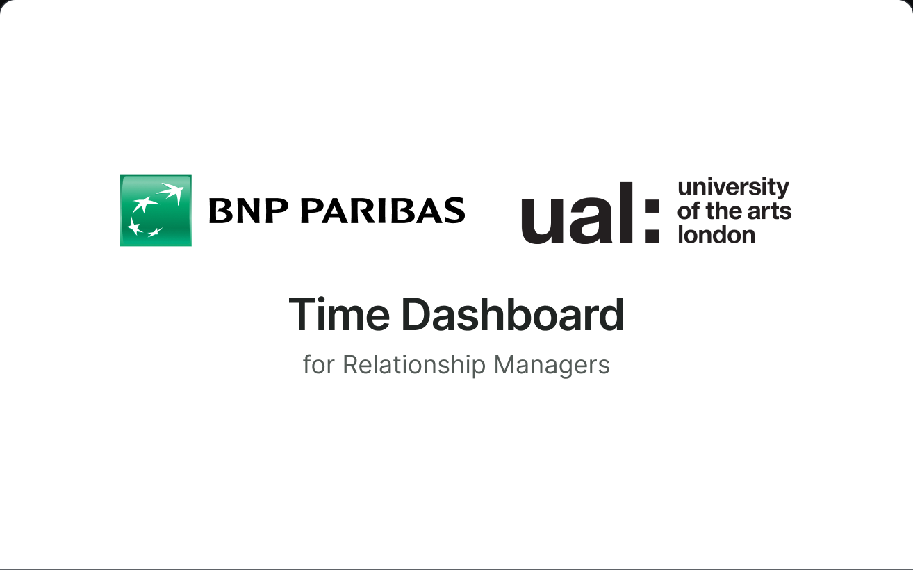
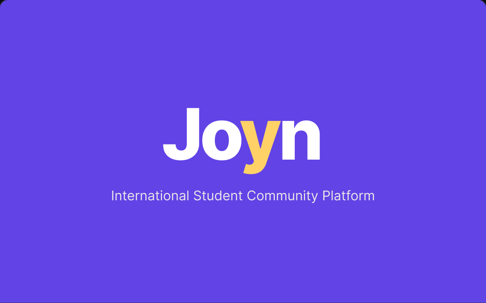
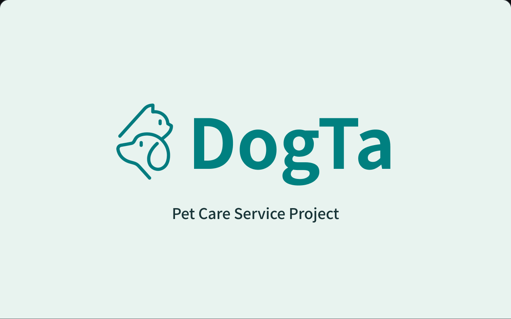

Codee
About
길진환
Jinhwan Gil
전략 기획 · 서비스 디자이너
UI/UX와 서비스 디자인을 중심으로 여러 분야를 넘나드는 디자이너입니다. 사용자 중심의 사고와 시각 커뮤니케이션, 구조적인 설계로 명확하고 효과적인 경험을 만듭니다. 정보 구조화 및 전략 기획, 인터페이스 디자인을 조합해, 사용자에게 적합한 해결책을 설계합니다.
Education
2024.08 – 2026.08
싱가포르 NAFA · 런던예술대(UAL) 학사과정
UI/UX · 커뮤니케이션 디자인 전공 · 편입 후 졸업
Experience
2025.08 – 2025.10
LFA Studio
마케팅 팀 인턴 · 업무 보조
Skills
- Research
- User Research
- In Depth Interviews
- Academic Literature Review
- Insight Synthesis
- Usability Testing
- Service and UX
- Journey Mapping
- Service Blueprint
- Information Architecture
- Prototyping
- Figma
- Adobe Creative Cloud
- Product and AI
- AI Workflow Design
- Interview Coding
- Design Decision Traceability
- ChatGPT
- Claude
- Perplexity
Selected Work
-

2025 · BNP Paribas 산학 협력
Timeboard
거래 · 고객 감정 · 상담 기록을 한 시간축에 모아 보는 RM(고객관리자)용 의사결정 대시보드
-

2026 · 개인 프로젝트
Joyn
유학생 3–5명이 일주일을 함께 보내고, 다음 주에도 함께할지 직접 정하는 서비스
-

2026 · 개인 프로젝트
Dogta
훈련 기록에 설명과 질문을 연결해 보호자와 훈련사의 소통을 돕는 반려동물 서비스
-
Routeree
Lorem auriosm is making so waiting a moment
How I Work
AI 에이전트와 일하는 시스템을 직접 만들고, 그 안에서 프로젝트를 운영합니다.
문제를 정하고 판단하는 일은 제가 맡고, 리서치와 디자인, 제작은 시스템 안에서 단계별로 이어집니다. 어느 단계든 검토를 거쳐야 다음 역으로 넘어갑니다. 에이전트마다 맡을 일과 넘겨줄 기준을 정해 두고, 결과는 다른 에이전트가 따로 검토합니다. 확인된 사실과 가설을 나눠 기록하기 때문에, 어떤 결정이 왜 내려졌는지 나중에도 되짚을 수 있습니다.
-
AX
AI를 업무에 들일 때 역할 분담, 검증 규칙, 작업 매뉴얼을 설계합니다.
-
서비스 및 UX 설계
사용자 여정과 운영 흐름, 정보 구조(IA)를 설계합니다.
-
리서치 및 기획 운영
조사로 문제를 정의하고, 범위 · 일정 · 역할을 나눕니다.
-
커뮤니케이션
서비스의 시각 언어와 설명 자료를 만듭니다.
MMain Line
문제 정의에서 검토까지, 모든 프로젝트가 같은 순서로 거치는 기본 노선.
- M1Problem Statement
- M2 · R1Research & Insight
- M3 · D1Design Opportunity
- M4Prototyping
- M5Critique & Loop
RResearch Line
막연한 과제를 ‘누구의, 어떤 상황’을 위한 설계 문제로 좁히는 노선.
- M2 · R1
- R2Brief
- R3User Hypotheses
- R4Scenarios
- R5References
DDesign Line
화면이 따를 방향과 구조, 디자인 규칙을 정하는 노선.
- M3 · D1
- D2Direction
- D3Structure
- D4Design System
- 교차점
- 직접 판단
- 공개 구간
- 비공개 구간
01 / 05
Problem Statement
누가, 어떤 상황에서 막히는지 한 문장으로 정의합니다.
요청받은 과제를 그대로 옮기지 않고, 사용자 · 상황 · 불편을 한 문장의 문제 정의로 다시 씁니다. 이번에 다룰 범위와 다루지 않을 범위를 함께 정해 두어, 이후 리서치와 디자인의 모든 판단이 같은 기준을 향하게 합니다.
02 / 05
Research & Insight
조사 결과를 확인된 사실과 가설로 나눠, 판단의 근거로 만듭니다.
사용자 인터뷰와 문헌 조사, 레퍼런스 분석에서 얻은 내용을 출처와 함께 정리합니다. 반복되는 행동과 불편을 묶어 인사이트로 도출하고, 아직 검증되지 않은 내용은 가설로 표시해 다음 단계에서 확인합니다.
03 / 05
Design Opportunity
인사이트에서 개선 기회를 고르고, 화면보다 흐름을 먼저 설계합니다.
정리된 인사이트 가운데 사용자 가치와 실현 가능성이 큰 지점을 디자인 기회로 정의합니다. 사용자 여정과 서비스 블루프린트로 사람 · 운영 · 시스템이 맞물리는 순서를 잡고, 정보 구조(IA)로 화면 사이의 연결을 설계합니다.
04 / 05
Prototyping
핵심 흐름을 직접 눌러 볼 수 있는 화면으로 만들어 검증합니다.
Figma와 코드 프로토타입으로 가장 중요한 흐름부터 구현하고, 직접 사용해 보며 막히는 지점을 찾습니다. 그 과정에서 정한 시각 언어와 컴포넌트 규칙은 디자인 시스템으로 정리해, 화면이 늘어나도 일관되게 확장할 수 있게 합니다.
05 / 05
Critique & Loop
정해 둔 기준으로 점검하고, 결과를 다음 수정에 반영합니다.
사용성과 접근성, 구현 가능성을 기준으로 결과를 점검하고, 작업에 참여하지 않은 시선으로 한 번 더 검토합니다. 발견한 문제는 해당 단계로 되돌려 고치고, 바뀐 결정과 그 이유를 기록해 다음 프로젝트의 기준으로 삼습니다.